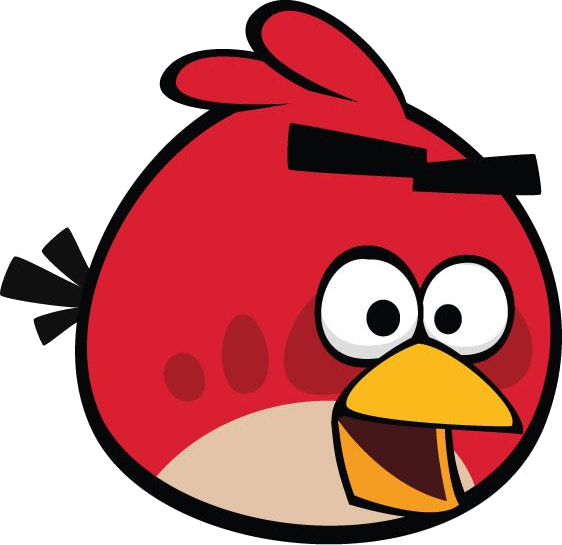

I protagonisti
- Red
-  Sono cardinali rossi e non hanno nessuna abilità particolare. Gli unici introdotti immediatamente
- Blue (Jay, Jake e Jim Blue alias "The Blues")
-
 Sono blu, piccoli e apparentemente poco distruttivi. Se però viene toccato un qualsiasi punto dello schermo (touchscreen o click del mouse su
schermi tradizionali) mentre uno di questi uccelli è in volo, esso si triplica e viene sostituito da tre uccelli identici, che continuano nella sua traiettoria seguendo un percorso "a pioggia".
Particolarmente adatti a distruggere elementi in vetro e introdotti dal primo capitolo. In alcuni dei cortometraggi animati pubblicati da Rovio su Angry Birds toons come
promozione di nuovi capitoli, appaiono come un gruppetto di tre giovani volatili.
Sono blu, piccoli e apparentemente poco distruttivi. Se però viene toccato un qualsiasi punto dello schermo (touchscreen o click del mouse su
schermi tradizionali) mentre uno di questi uccelli è in volo, esso si triplica e viene sostituito da tre uccelli identici, che continuano nella sua traiettoria seguendo un percorso "a pioggia".
Particolarmente adatti a distruggere elementi in vetro e introdotti dal primo capitolo. In alcuni dei cortometraggi animati pubblicati da Rovio su Angry Birds toons come
promozione di nuovi capitoli, appaiono come un gruppetto di tre giovani volatili.
- Yellow
-
 I Chuck sono gialli, hanno forma triangolare e, se viene toccato un qualsiasi punto dello schermo (touchscreen o click del mouse
su schermi tradizionali) mentre volano (prima che siano venuti a contatto con qualcosa), aumentano di velocità e partono per la retta tangente alla parabola invece di continuare a cadere, formando
eventualmente un'altra parabola. Distruggono con più facilità oggetti di legno, ed esordiscono nel primo capitolo.
I Chuck sono gialli, hanno forma triangolare e, se viene toccato un qualsiasi punto dello schermo (touchscreen o click del mouse
su schermi tradizionali) mentre volano (prima che siano venuti a contatto con qualcosa), aumentano di velocità e partono per la retta tangente alla parabola invece di continuare a cadere, formando
eventualmente un'altra parabola. Distruggono con più facilità oggetti di legno, ed esordiscono nel primo capitolo.
- Black (Bomb)
- Sono grossi e neri ed esplodono come bombe, o poco dopo aver toccato una superficie, diventando prima rossi per poco tempo, o immediatamente se viene toccato un qualsiasi punto dello schermo (touchscreen o click del mouse su schermi tradizionali) , anche in volo. Adatti soprattutto per distruggere elementi in pietra, sono introdotti nel primo capitolo.